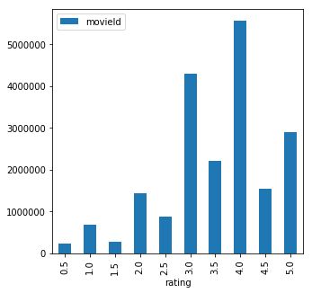

df[['col1', 'col2']].groupby('col1') - Aggregating and Groupingpd.concat([df1, df2]) - Stack dataframesdf1.append(df2) - Stack dataframespd.concat with axis = 1, join = "inner"import sys
print(sys.executable)
from IPython.core.interactiveshell import InteractiveShell
InteractiveShell.ast_node_interactivity = "all"
InteractiveShell.colors = "Linux"
InteractiveShell.separate_in = 0
from tabulate import tabulate
import pandas as pd
import matplotlib.pyplot as plt
import os, sys
os.chdir(sys.path[0]) # Change dir to the folder this .ipynb file is in
print(os.listdir('../../../../data/w4pd'))
movies = pd.read_csv('../../../../data/w4pd/movies.csv')
tags = pd.read_csv('../../../../data/w4pd/tags.csv')
ratings = pd.read_csv('../../../../data/w4pd/ratings.csv')/home/jcmint/anaconda3/envs/learningenv/bin/python
['genome-scores.csv', 'genome-tags.csv', 'Icon\r', 'links.csv', 'movies.csv', 'ratings.csv', 'README.txt', 'tags.csv']print(ratings.head(5)) userId movieId rating timestamp
0 1 2 3.5 1112486027
1 1 29 3.5 1112484676
2 1 32 3.5 1112484819
3 1 47 3.5 1112484727
4 1 50 3.5 1112484580df[['col1', 'col2']].groupby('col1') - Aggregating and GroupingIt makes sense to calculate different aggregate stats for different groupings. groupby doesn't do any aggregate calculations by default - it just reorders the df so that the same values in the grouping column are all consecutive. You can also use .count() on a grouping.
user_ratings = ratings[['userId', 'rating']].groupby('userId').mean()
print(user_ratings.head(5))
movie_ratings = ratings[['movieId', 'rating']].groupby('movieId').mean()
print(movie_ratings.head(5)) rating
userId
1 3.742857
2 4.000000
3 4.122995
4 3.571429
5 4.272727
rating
movieId
1 3.921240
2 3.211977
3 3.151040
4 2.861393
5 3.064592Generate a histogram of movie ratings (so group by the ratings column).
ratings_hist = ratings[['movieId', 'rating']].groupby('rating').count()
print(ratings_hist)
# Now we plot
import matplotlib
ratings_hist.plot(kind = "bar", figsize = (5, 5))
plt.show() movieId
rating
0.5 239125
1.0 680732
1.5 279252
2.0 1430997
2.5 883398
3.0 4291193
3.5 2200156
4.0 5561926
4.5 1534824
5.0 2898660
<matplotlib.axes._subplots.AxesSubplot at 0x7f2a9c930470>
png
Encode a filter that saves the indices of a dataframe (for which a condition is true), and then apply the filter as a mask to extract the desired values. (This can also apply to 3D image matrices).
Below - find the most active raters (count of userId groupings of the ratings df). Looking at the mean and standard dev set the cutoff at 2000! movie ratings.
active_raters = ratings[['userId', 'rating']].groupby('userId').count()
print(active_raters.mean(), active_raters.std())
highly_active_raters = active_raters[active_raters['rating'] > 2000]
print(highly_active_raters.shape[0])rating 144.41353
dtype: float64 rating 230.267257
dtype: float64
255Using the movies dataframe, filter for movies with Animation as a genre:
print(tabulate(movies.head(), headers=movies.columns, tablefmt='psql'))
is_anime = movies['genres'].str.contains('Ani*')
the_anime = movies[is_anime]
print(the_anime.shape[0])
print(tabulate(the_anime.head(), headers=the_anime.columns, tablefmt='psql'))+----+-----------+------------------------------------+---------------------------------------------+
| | movieId | title | genres |
|----+-----------+------------------------------------+---------------------------------------------|
| 0 | 1 | Toy Story (1995) | Adventure|Animation|Children|Comedy|Fantasy |
| 1 | 2 | Jumanji (1995) | Adventure|Children|Fantasy |
| 2 | 3 | Grumpier Old Men (1995) | Comedy|Romance |
| 3 | 4 | Waiting to Exhale (1995) | Comedy|Drama|Romance |
| 4 | 5 | Father of the Bride Part II (1995) | Comedy |
+----+-----------+------------------------------------+---------------------------------------------+
1027
+-----+-----------+-------------------------+---------------------------------------------+
| | movieId | title | genres |
|-----+-----------+-------------------------+---------------------------------------------|
| 0 | 1 | Toy Story (1995) | Adventure|Animation|Children|Comedy|Fantasy |
| 12 | 13 | Balto (1995) | Adventure|Animation|Children |
| 47 | 48 | Pocahontas (1995) | Animation|Children|Drama|Musical|Romance |
| 236 | 239 | Goofy Movie, A (1995) | Animation|Children|Comedy|Romance |
| 241 | 244 | Gumby: The Movie (1995) | Animation|Children |
+-----+-----------+-------------------------+---------------------------------------------+Combining data from multiple dataframes or sources.
pd.concat([df1, df2]) - Stack dataframesThe stacking is not really ideal in this scenario - it would be better to stack df's that have matched columns and data types.
stack_1 = pd.concat([tags.head(), movies.head()])
print(tabulate(stack_1, headers=stack_1.columns, tablefmt='psql'))+----+---------------------------------------------+-----------+---------------+---------------+------------------------------------+----------+
| | genres | movieId | tag | timestamp | title | userId |
|----+---------------------------------------------+-----------+---------------+---------------+------------------------------------+----------|
| 0 | nan | 4141 | Mark Waters | 1.2406e+09 | nan | 18 |
| 1 | nan | 208 | dark hero | 1.36815e+09 | nan | 65 |
| 2 | nan | 353 | dark hero | 1.36815e+09 | nan | 65 |
| 3 | nan | 521 | noir thriller | 1.36815e+09 | nan | 65 |
| 4 | nan | 592 | dark hero | 1.36815e+09 | nan | 65 |
| 0 | Adventure|Animation|Children|Comedy|Fantasy | 1 | nan | nan | Toy Story (1995) | nan |
| 1 | Adventure|Children|Fantasy | 2 | nan | nan | Jumanji (1995) | nan |
| 2 | Comedy|Romance | 3 | nan | nan | Grumpier Old Men (1995) | nan |
| 3 | Comedy|Drama|Romance | 4 | nan | nan | Waiting to Exhale (1995) | nan |
| 4 | Comedy | 5 | nan | nan | Father of the Bride Part II (1995) | nan |
+----+---------------------------------------------+-----------+---------------+---------------+------------------------------------+----------+
/home/jcmint/anaconda3/envs/learningenv/lib/python3.7/site-packages/ipykernel_launcher.py:1: FutureWarning: Sorting because non-concatenation axis is not aligned. A future version
of pandas will change to not sort by default.
To accept the future behavior, pass 'sort=False'.
To retain the current behavior and silence the warning, pass 'sort=True'.
"""Entry point for launching an IPython kernel.df1.append(df2) - Stack dataframesThis gives the same results as using stack.
append_1 = tags.head().append(movies.head())
print(tabulate(append_1 , headers=append_1.columns, tablefmt='psql'))+----+---------------------------------------------+-----------+---------------+---------------+------------------------------------+----------+
| | genres | movieId | tag | timestamp | title | userId |
|----+---------------------------------------------+-----------+---------------+---------------+------------------------------------+----------|
| 0 | nan | 4141 | Mark Waters | 1.2406e+09 | nan | 18 |
| 1 | nan | 208 | dark hero | 1.36815e+09 | nan | 65 |
| 2 | nan | 353 | dark hero | 1.36815e+09 | nan | 65 |
| 3 | nan | 521 | noir thriller | 1.36815e+09 | nan | 65 |
| 4 | nan | 592 | dark hero | 1.36815e+09 | nan | 65 |
| 0 | Adventure|Animation|Children|Comedy|Fantasy | 1 | nan | nan | Toy Story (1995) | nan |
| 1 | Adventure|Children|Fantasy | 2 | nan | nan | Jumanji (1995) | nan |
| 2 | Comedy|Romance | 3 | nan | nan | Grumpier Old Men (1995) | nan |
| 3 | Comedy|Drama|Romance | 4 | nan | nan | Waiting to Exhale (1995) | nan |
| 4 | Comedy | 5 | nan | nan | Father of the Bride Part II (1995) | nan |
+----+---------------------------------------------+-----------+---------------+---------------+------------------------------------+----------+pd.concat with axis = 1, join = "inner"This is NOT the same as an INNER JOIN ON tb1.field1 = tbl2.field1 as it would be in SQL As a result, this isn't particularly useful since you're not matching as you combine data.
joined = pd.concat([tags.head(), movies.head()], axis = 1, join = "inner")
print(tabulate(joined , headers=joined.columns, tablefmt='psql'))+----+----------+-----------+---------------+-------------+-----------+------------------------------------+---------------------------------------------+
| | userId | movieId | tag | timestamp | movieId | title | genres |
|----+----------+-----------+---------------+-------------+-----------+------------------------------------+---------------------------------------------|
| 0 | 18 | 4141 | Mark Waters | 1240597180 | 1 | Toy Story (1995) | Adventure|Animation|Children|Comedy|Fantasy |
| 1 | 65 | 208 | dark hero | 1368150078 | 2 | Jumanji (1995) | Adventure|Children|Fantasy |
| 2 | 65 | 353 | dark hero | 1368150079 | 3 | Grumpier Old Men (1995) | Comedy|Romance |
| 3 | 65 | 521 | noir thriller | 1368149983 | 4 | Waiting to Exhale (1995) | Comedy|Drama|Romance |
| 4 | 65 | 592 | dark hero | 1368150078 | 5 | Father of the Bride Part II (1995) | Comedy |
+----+----------+-----------+---------------+-------------+-----------+------------------------------------+---------------------------------------------+The actual INNER JOIN
Below, inner jon the aggregated mean movie_ratings and a new movie_counts (the number of ratings per movie). Then inner join again to movies dataframe.
movie_counts = ratings[['movieId', 'rating']].groupby('movieId').count()
print(movie_ratings.head())
print(movie_counts.head())
merged_1 = movie_ratings.merge(movie_counts, on = 'movieId', how='inner')
print(merged_1.head()) rating
movieId
1 3.921240
2 3.211977
3 3.151040
4 2.861393
5 3.064592
rating
movieId
1 49695
2 22243
3 12735
4 2756
5 12161
rating_x rating_y
movieId
1 3.921240 49695
2 3.211977 22243
3 3.151040 12735
4 2.861393 2756
5 3.064592 12161Chained merging on a merged dataframe without a new object is possible, but becomes unreadable after a few in a row:
merged_2 = merged_1.merge(movies, on = 'movieId', how='inner')
merged_3 = movie_ratings.merge(movie_counts, on = 'movieId', how='inner').merge(movies, on = 'movieId', how='inner')
print(tabulate(merged_2.head() , headers=merged_2.columns, tablefmt='psql'))
print(tabulate(merged_3.head(), headers=merged_3.columns, tablefmt='psql'))+----+-----------+------------+------------+------------------------------------+---------------------------------------------+
| | movieId | rating_x | rating_y | title | genres |
|----+-----------+------------+------------+------------------------------------+---------------------------------------------|
| 0 | 1 | 3.92124 | 49695 | Toy Story (1995) | Adventure|Animation|Children|Comedy|Fantasy |
| 1 | 2 | 3.21198 | 22243 | Jumanji (1995) | Adventure|Children|Fantasy |
| 2 | 3 | 3.15104 | 12735 | Grumpier Old Men (1995) | Comedy|Romance |
| 3 | 4 | 2.86139 | 2756 | Waiting to Exhale (1995) | Comedy|Drama|Romance |
| 4 | 5 | 3.06459 | 12161 | Father of the Bride Part II (1995) | Comedy |
+----+-----------+------------+------------+------------------------------------+---------------------------------------------+
+----+-----------+------------+------------+------------------------------------+---------------------------------------------+
| | movieId | rating_x | rating_y | title | genres |
|----+-----------+------------+------------+------------------------------------+---------------------------------------------|
| 0 | 1 | 3.92124 | 49695 | Toy Story (1995) | Adventure|Animation|Children|Comedy|Fantasy |
| 1 | 2 | 3.21198 | 22243 | Jumanji (1995) | Adventure|Children|Fantasy |
| 2 | 3 | 3.15104 | 12735 | Grumpier Old Men (1995) | Comedy|Romance |
| 3 | 4 | 2.86139 | 2756 | Waiting to Exhale (1995) | Comedy|Drama|Romance |
| 4 | 5 | 3.06459 | 12161 | Father of the Bride Part II (1995) | Comedy |
+----+-----------+------------+------------+------------------------------------+---------------------------------------------+df[(df['col1'] >= 1) & (df['col1'] <=1 )]
After merging three dataframes with aggregated ratings and rating counts data, we can apply a filter - the is_anime which was a string filter, as well as a new filter for movies that were both highly rated (more than 4) and actively rated (more than 2000 ratings).
ani_summary = merged_3[is_anime & (merged_3['rating_x'] > 4) & (merged_3['rating_y'] > 2000)]
print(tabulate(ani_summary, headers=ani_summary.columns, tablefmt='psql'))
print(ani_summary.shape[0])+------+-----------+------------+------------+----------------------------------------------------------------------+----------------------------------------------------+
| | movieId | rating_x | rating_y | title | genres |
|------+-----------+------------+------------+----------------------------------------------------------------------+----------------------------------------------------|
| 708 | 720 | 4.10947 | 8171 | Wallace & Gromit: The Best of Aardman Animation (1996) | Adventure|Animation|Comedy |
| 732 | 745 | 4.16732 | 12073 | Wallace & Gromit: A Close Shave (1995) | Animation|Children|Comedy |
| 1125 | 1148 | 4.18107 | 15022 | Wallace & Gromit: The Wrong Trousers (1993) | Animation|Children|Comedy|Crime |
| 1197 | 1223 | 4.06677 | 7781 | Grand Day Out with Wallace and Gromit, A (1989) | Adventure|Animation|Children|Comedy|Sci-Fi |
| 2914 | 3000 | 4.0963 | 9564 | Princess Mononoke (Mononoke-hime) (1997) | Action|Adventure|Animation|Drama|Fantasy |
| 3340 | 3429 | 4.1207 | 2585 | Creature Comforts (1989) | Animation|Comedy |
| 5519 | 5618 | 4.20381 | 13466 | Spirited Away (Sen to Chihiro no kamikakushi) (2001) | Adventure|Animation|Fantasy |
| 5591 | 5690 | 4.08974 | 3198 | Grave of the Fireflies (Hotaru no haka) (1988) | Animation|Drama|War |
| 5872 | 5971 | 4.14948 | 5489 | My Neighbor Totoro (Tonari no Totoro) (1988) | Animation|Children|Drama|Fantasy |
| 6251 | 6350 | 4.06192 | 3537 | Laputa: Castle in the Sky (Tenkû no shiro Rapyuta) (1986) | Action|Adventure|Animation|Children|Fantasy|Sci-Fi |
| 6987 | 7099 | 4.09208 | 3334 | Nausicaä of the Valley of the Wind (Kaze no tani no Naushika) (1984) | Adventure|Animation|Drama|Fantasy|Sci-Fi |
+------+-----------+------------+------------+----------------------------------------------------------------------+----------------------------------------------------+
11
/home/jcmint/anaconda3/envs/learningenv/lib/python3.7/site-packages/ipykernel_launcher.py:4: UserWarning: Boolean Series key will be reindexed to match DataFrame index.
after removing the cwd from sys.path.In conclusion, it seems that the two big categories were Wallance & Gromit and Anime, which makes sense, although it misses some Pixar and Disney films which I would've expected to make the cut.